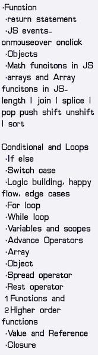
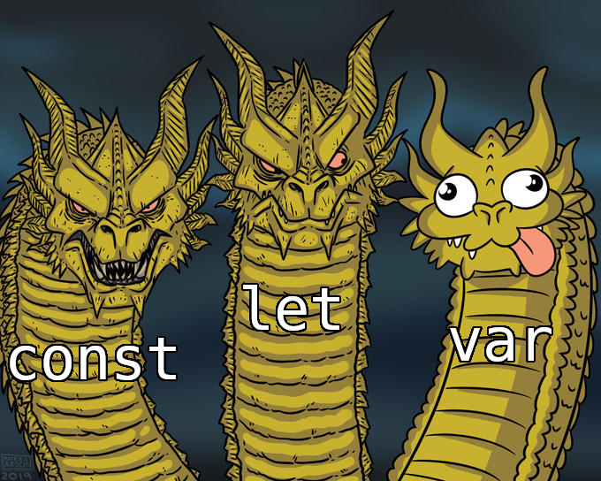
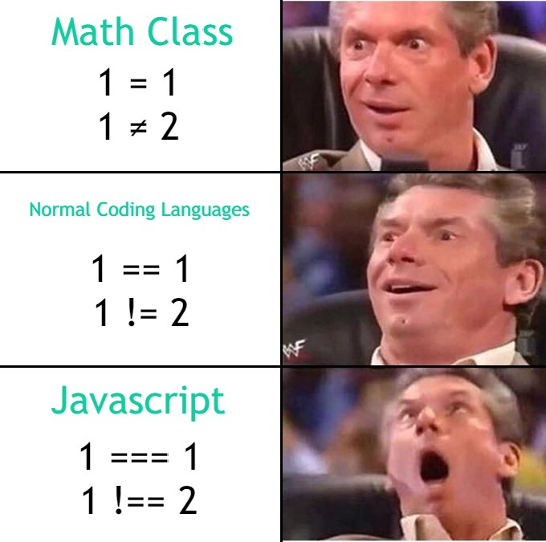

First of all, below is an overview of the following JavaScript topics:

- JavaScript
JavaScript is a powerful programming language that can add interactivity to a website. It was invented by Brendan Eich.
- Functions
Functions
are a way of packaging functionality that you wish to reuse. It's possible to define a body of code as a function that executes when you call the function name in your code. This is a good alternative to repeatedly writing the same code. You have already seen some uses of functions. For example:
let myVariable = document.querySelector("h1");
alert("hello!");
//buit-into browser JavaScript functions
- Objects
In JavaScript,almost "everything" is an object. All JavaScript values, except primitives, are objects.
Objects in JavaScript, just as in many other programming languages, can be compared to objects in real life. In JavaScript, an object is a standalone entity, with properties and type. Compare it with a cup, for example. A cup is an object, with properties. A cup has a color, a design, weight, a material it is made of, etc. The same way, JavaScript objects can have properties, which define their characteristics.
A javaScript object is an entity having state and behavior (properties and method). For example: car, pen, bike, chair, glass, keyboard, monitor etc.
JavaScript is an object-based language. Everything is an object in JavaScript.
JavaScript is template based not class based. Here, we don't create class to get the object. But, we direct create objects.
- Math functions in JavaScript
The JavaScript Math object allows you to perform mathematical tasks on numbers.
The syntax for any Math property is : Math.property.
The syntax for any Math methods is : Math.method(number)
Math
is a built-in object that has properties and methods for mathematical constants and functions. It's not a function object. Math works with the Number type.
- Arrays and Array Functions in JavaScript
The Array object is used to store multiple values in a single variable. JavaScript Array Methods.
- length
Sets or returns the number of elements in an array
- join
Joins all elements of an array into a string
- splice
Adds/Removes elements from an array
- slice
Selects a part of an array, and returns the new array
- pop
Removes the last element of an array, and returns that element
- push
Adds new elements to the end of an array, and returns the new length
- shift
Removes the first element of an array, and returns that element
- unshift
Adds new elements to the beginning of an array, and returns the new length
- sort
Sorts the elements of an array
- Conditional statements and loops
Conditional statements transfer control within a program.Loop statements test a condition to determine how many times to repeat a set of statements.
Conditional statements are used to perform different actions based on different conditions. Very often when you write code, you want to perform different actions for different decisions.
You can use conditional statements in your code to do this.
In JavaScript we have the following conditional statements:
Use if to specify a block of code to be executed, if a specified condition is true
Use else to specify a block of code to be executed, if the same condition is false
Use else if to specify a new condition to test, if the first condition is false
Use switch to specify many alternative blocks of code to be executed.
- if else
- switch case
The switch statement is used to perform different actions based on different conditions.
- logic building
- happy flow
In the context of software or information modeling, a happy path (sometimes called happy flow) is a default scenario featuring no exceptional or error conditions.
The happy path is designed to help users achieve their end goals. But the unhappy path ends abruptly, without the user achieving the desired outcome. There are many ways things can go wrong within an app, so there's no single unhappy path.
- edge cases
Algorithms are built to handle specific data structures with a range of accepted parameters. An edge case is a problem or situation that occurs only at an extreme (maximum or minimum) operating parameter. E.g. Large Values, Accepted types, Emptiness like empty array:[],Accepted data structure.
- for loops
A for loop repeats until a specified condition evaluates to false. The JavaScript for loop is similar to the Java and C for loop.
- while loops
A while statement executes its statements as long as a specified condition evaluates to true.
- break statement
Use the break statement to terminate a loop, switch, or in conjunction with a labeled statement.
- for ...in and for ...of
While for...in iterates over property names, for...of iterates over property values.
- continue statement
The continue statement can be used to restart a while, do-while, for, or label statement.
- Variables and scopes
Scope determines the accessibility (visibility) of variables.

JavaScript has 3 types of scope:
Block scope
Function scope
Global scope
Variables declared inside a { } block cannot be accessed from outside the block.Variables declared with the var keyword can NOT have block scope.
Variables declared inside a { } block can be accessed from outside the block.
Variables declared within a JavaScript function, become LOCAL to the function. Local variables have Function Scope:
They can only be accessed from within the function. Since local variables are only recognized inside their functions, variables with the same name can be used in different functions.
Local variables are created when a function starts, and deleted when the function is completed
JavaScript has function scope: Each function creates a new scope.
Variables defined inside a function are not accessible (visible) from outside the function.
Variables declared with var, let and const are quite similar when declared inside a function.
They all have Function Scope.
A variable declared outside a function, becomes GLOBAL. A global variable has Global Scope:
All scripts and functions on a web page can access it.

- Advanced operators

- Arrays
The Array object, as with arrays in other programming languages, enables storing a collection of multiple items under a single variable name, and has members for performing common array operations.
- Objects
JavaScript Object Destructuring, Spread Syntax, and the Rest Parameter
- spread syntax
The spread (...) syntax allows an iterable, such as an array or string, to be expanded in places where zero or more arguments (for function calls) or elements (for array literals) are expected. In an object literal, the spread syntax enumerates the properties of an object and adds the key-value pairs to the object being created.
Spread syntax looks exactly like rest syntax. In a way, spread syntax is the opposite of rest syntax. Spread syntax "expands" an array into its elements, while rest syntax collects multiple elements and "condenses" them into a single element. See rest parameters and rest property.
- rest parameter
The rest parameter syntax allows a function to accept an indefinite number of arguments as an array, providing a way to represent variadic functions in JavaScript. A function definition's last parameter can be prefixed with ... (three U+002E FULL STOP characters), which will cause all remaining (user supplied) parameters to be placed within an Array object. A function definition can only have one rest parameter, and the rest parameter must be the last parameter in the function definition.
- Destructuring assignment
The destructuring assignment syntax is a JavaScript expression that makes it possible to unpack values from arrays, or properties from objects, into distinct variables.
- Arrow functions
Arrow functions were introduced in ES6.
Arrow functions allow us to write shorter function syntax:
let myFunction = (a, b) => a * b;
Before Arrow:
hello = function() {
return "Hello World!"; }
With Arrow Function:
hello = () => {
return "Hello World!";
}
It gets shorter! If the function has only one statement, and the statement returns a value, you can remove the brackets and the return keyword:
Arrow Functions Return Value by Default:
hello = () => "Hello World!"; Note: This works only if the function has only one statement.
If you have parameters, you pass them inside the parentheses:
Arrow Function With Parameters:
hello = (val) => "Hello " + val;
In fact, if you have only one parameter, you can skip the parentheses as well:
Arrow Function Without Parentheses:
hello = val => "Hello " + val;
- Higher order functions
In JavaScript, functions are treated as first-class citizens . We can treat functions as values and assign them to another variable, pass them as arguments to another function, or even return them from another function.
This ability of functions to act as first-class functions is what powers higher order functions in JavaScript.
Basically, a function which takes another function as an argument or returns a function is known as a higher order function.
- Built-in higher order functions like filter, map, for each etc.
- Pass by value and pass by reference
Pass By Value: In Pass by value, function is called by directly passing the value of the variable as an argument. So any changes made inside the function does not affect the original value.
In Pass by value, parameters passed as an arguments create its own copy. So any changes made inside the function is made to the copied value not to the original value .
Pass by Reference: In Pass by Reference, Function is called by directly passing the reference/address of the variable as an argument. So changing the value inside the function also change the original value. In JavaScript array and Object follows pass by reference property.
- Primitive and non-primitive
In JavaScript, there are two main types of data: primitive and non-primitive (also known as reference) types. The difference between them can affect how they behave when used with certain operators.
Assignment operator:
The assignment operator in JavaScript is the equals sign "=" and is used to assign a value to a variable. When a primitive value is assigned to a variable, the value is copied to the variable. This means that the value stored in the variable is completely independent of the original value.
For example:
let x = 5;
let y = x;
x = 10;
console.log(x); // Output: 10
console.log(y); // Output: 5
In the above example, x is assigned the value of 5 and then y is assigned the value of x. When the value of x is changed to 10, the value of y remains 5 because it was copied and stored in a separate memory location.
However, when a non-primitive value is assigned to a variable, only a reference to the original value is stored in the variable. This means that any changes made to the value will be reflected in all variables that reference it.
For example:
let a = [1, 2, 3];
let b = a;
a.push(4);
console.log(a); // Output: [1, 2, 3, 4]
console.log(b); // Output: [1, 2, 3, 4]
In the above example, a is assigned an array containing the values 1, 2, and 3. b is then assigned to the same array as a. When the push() method is called on a to add the value 4 to the end of the array, this change is also reflected in b. This is because a and b are referencing the same array in memory.
Equality operator:
The equality operator in JavaScript is the double equals sign "==". When comparing two values using the equality operator, JavaScript performs a type coercion, which means it attempts to convert one value to the type of the other value before making the comparison.
When comparing two primitive values using the equality operator, JavaScript compares their values. If the values are the same, the result is true.
For example:
console.log(5 == "5"); // Output: true
In the above example, the integer 5 and the string "5" are compared using the equality operator. Since the values are the same, the result is true.
However, when comparing two non-primitive values using the equality operator, JavaScript compares their references. If the references are the same, the result is true.
For example:
let c = [1, 2, 3];
let d = [1, 2, 3];
console.log(c == d); // Output: false
In the above example, c and d are assigned two separate arrays containing the same values. When the arrays are compared using the equality operator, JavaScript compares their references, which are not the same. Therefore, the result is false.
To compare non-primitive values by their values, you can use the triple equals sign "===" instead, which performs a strict comparison and does not perform type coercion.
- Scope-chain
When a variable is used in JavaScript, the JavaScript engine will try to find the variable's value in the current scope. If it could not find the variable, it will look into the outer scope and will continue to do so until it finds the variable or reaches global scope.
- closures
A closure is the combination of a function bundled together (enclosed) with references to its surrounding state (the lexical environment). In other words, a closure gives you access to an outer function's scope from an inner function.
A closure is a function having access to the parent scope, even after the parent function has closed.
- Functions-first class citizens of JavaScript
A programming language is said to have First-class functions when functions in that language are treated like any other variable. For example, in such a language, a function can be passed as an argument to other functions, can be returned by another function and can be assigned as a value to a variable.